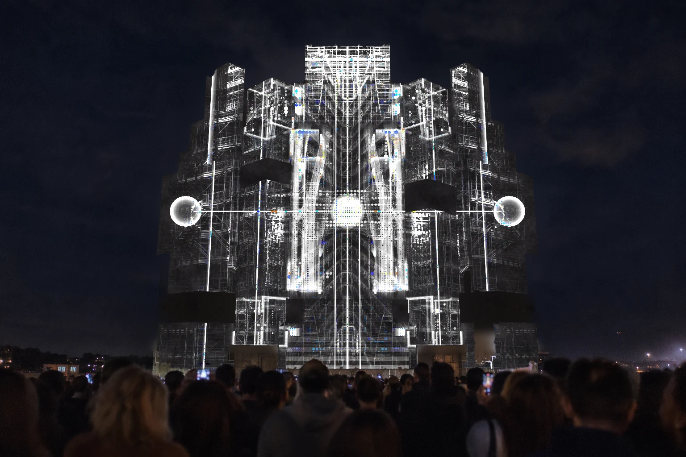
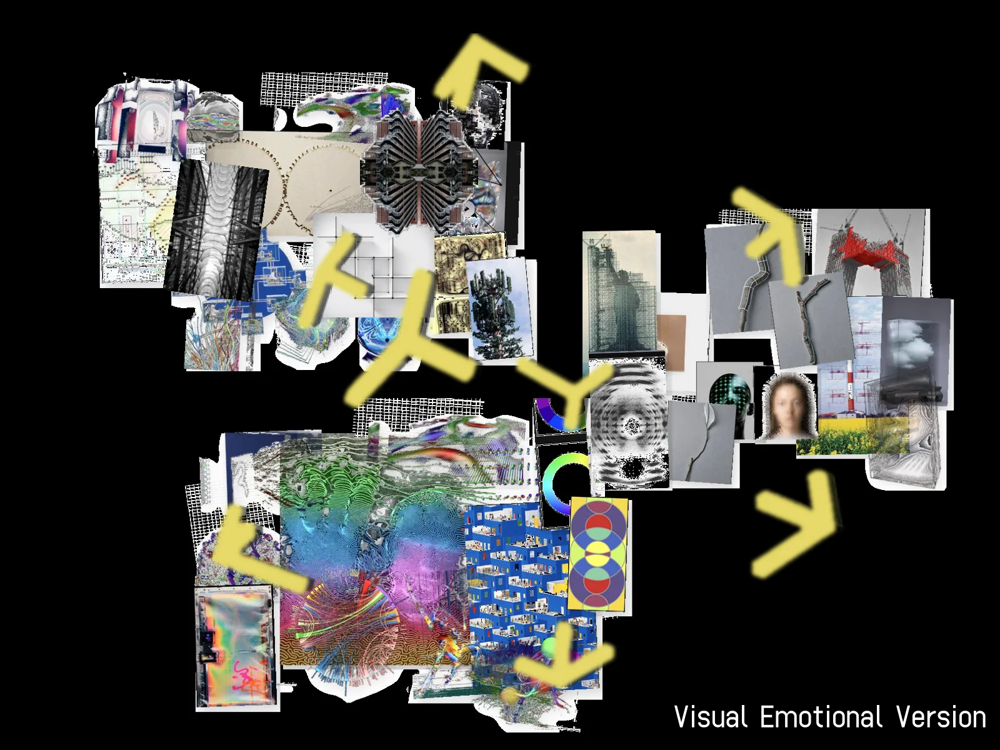
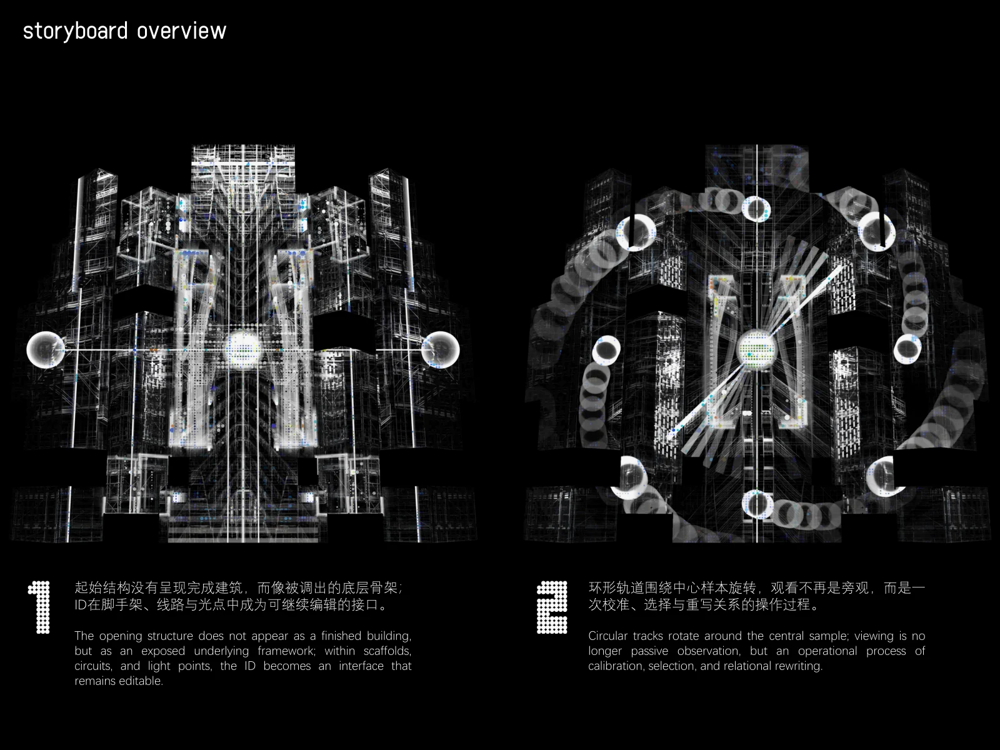
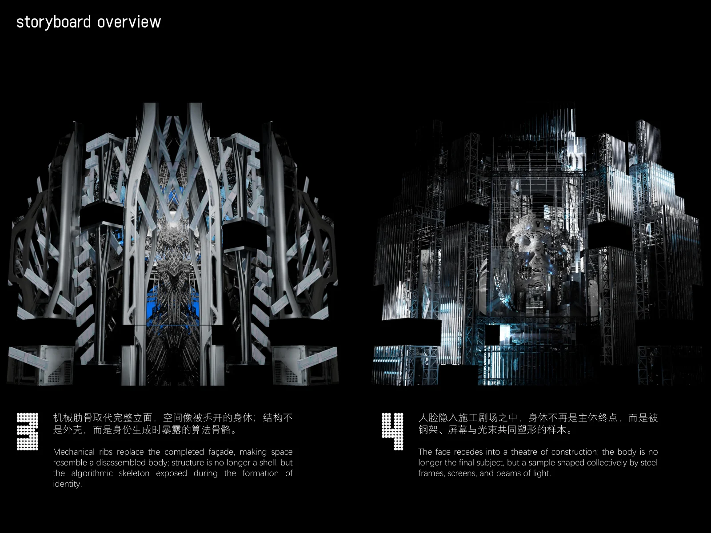
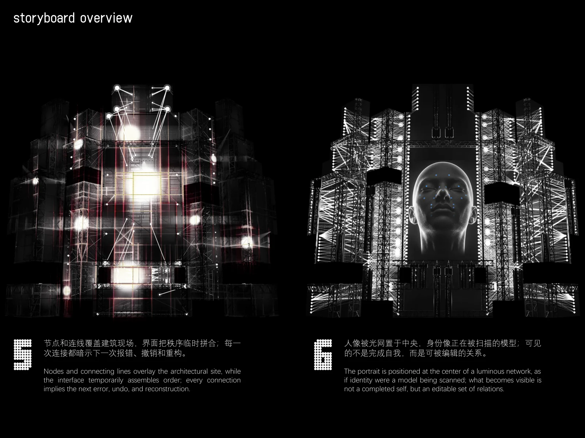
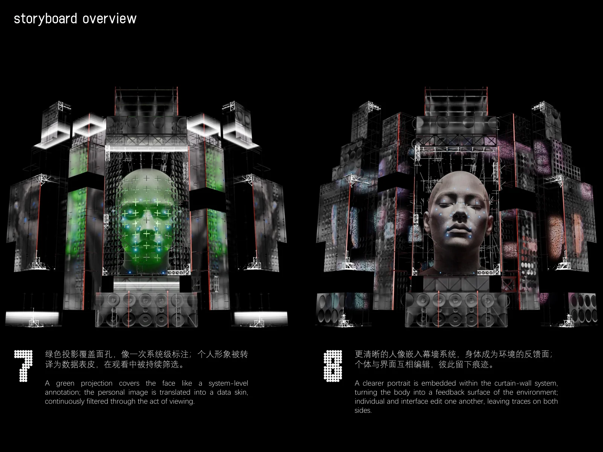
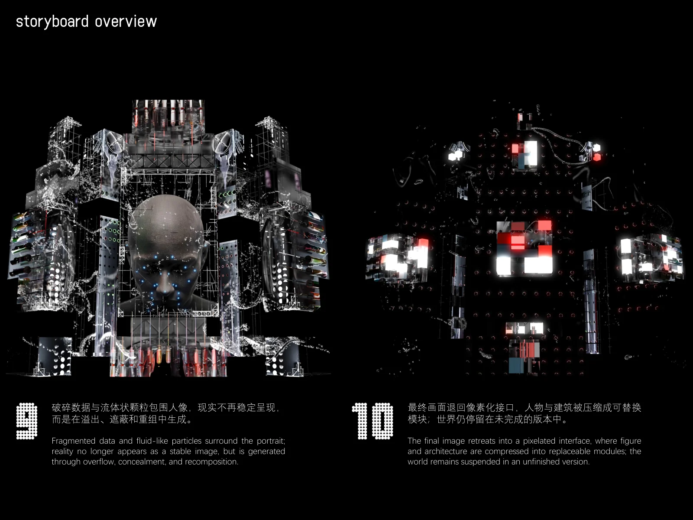

Redo ID
重置 ID
一场永不完工的覆写——世界没有成品，我们既是素材，也是编辑者。
世界从来没有一个最终的“成品”。我们所身处的社会结构、城市景观、甚至我们每天面对的日常现实，永远处于一种被搭建、被修改、被测试的“未完成状态”。当事物的虚拟性与可编辑性被彻底暴露，在算法编辑的底层逻辑里，报错、撤销以及不断地重构，本就是通往下一个版本的必经之路。
生命与社会的演进同样如此，它们并非为了抵达某个一劳永逸的完美结局。在这个永远无法完工的覆写剧场里，我们既是素材，也是操作者；既是样本，也是编辑者；既被环境塑形，也共同塑造世界。
An overwriting that never ends: the world has no finished version, and we are both its material and its editors.
The world has never been a finished final product. The social structures we inhabit, urban landscapes, and even the everyday reality we encounter remain perpetually unfinished—continually constructed, revised, and trialed. When the virtuality and editability of all things are fully laid bare, errors, undo actions and constant reconstruction are inherent steps leading to the next iteration within the underlying logic of algorithmic editing.
The evolution of life and society follows the same rule. They are never meant to reach a permanent, flawless end state. Inside this ever-unfinished theatre of overwriting, we serve as both raw material and operator, both test subject and editor. We are shaped by our surroundings, yet collectively we reshape the world.






